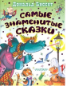

И снова сказки… И это правильно - сказки были, есть и будут снова и снова до тех пор, пока на Земле будут дети и удивительные творцы волшебства - писатели-сказочники. Один из таких волшебников - писатель Дональд Биссет. Спросите у вашего ребенка, приходилось ли ему беседовать с говорящей улиткой? А знает ли он тигренка, опечаленного потерей черных полосок на его золотистой шерстке? А знаком ли он с человеком с Луны? Если - нет, то не лишайте его удовольствия познакомиться с этими необыкновенными, ни на кого не похожими персонажами сказок Биссета. Для дошкольного возраста.